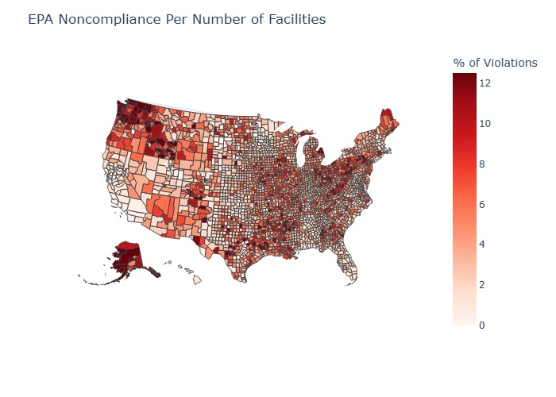
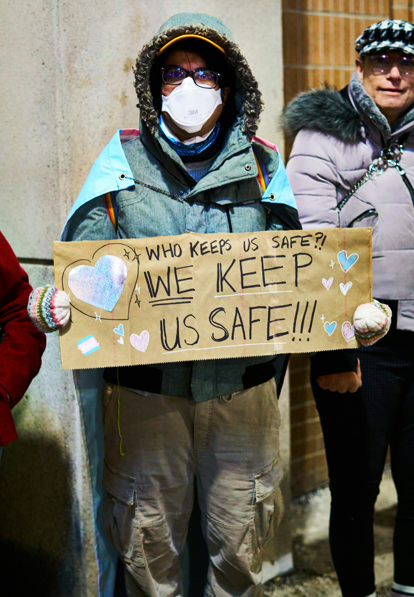

The Features

Noncompliance Prediction & Enforcement Report
A machine learning model predicts EPA noncompliance. Statistical and criminological analysis assesses offense, risk, and punishment fairness. A policy report and memo recommend further action.
- Role
- N/A
- Year
- 2026
- Tools
- Python
Organization Impact Dashboard
[Long standfirst: the brief, the idea, the result.]
- Role
- Data Scientist
- Year
- 2026
- Tools
- Python: Pandas, Bokeh


AWS ETL Pipeline
A pipeline that collects subsurface geologic data from Slack, Dropbox and other sources, stores it in AWS S3, and uses AWS Glue to convert different formats (elevation rasters, well logs, geophysical model output and file inventories) into Parquet. The results load into a PostgreSQL database on AWS RDS, so the Data Visualization team can query everything with SQL from one place.
- Role
- Data Visualization Developer
- Year
- 2026
- Tools
- Python, AWS: S3, Glue, RDS (PostgreSQL)
Policy Proposal
A real submission to a Los Angeles Mayor campaign calling to increase the amount of initiatives and programs from the Mayor’s Office of Community Safety instead of expanding law enforcement. Proposed ideas and sources were adopted into the official policy platform.
- Role
- Volunteer
- Year
- 2026
- Tools
- N/A
